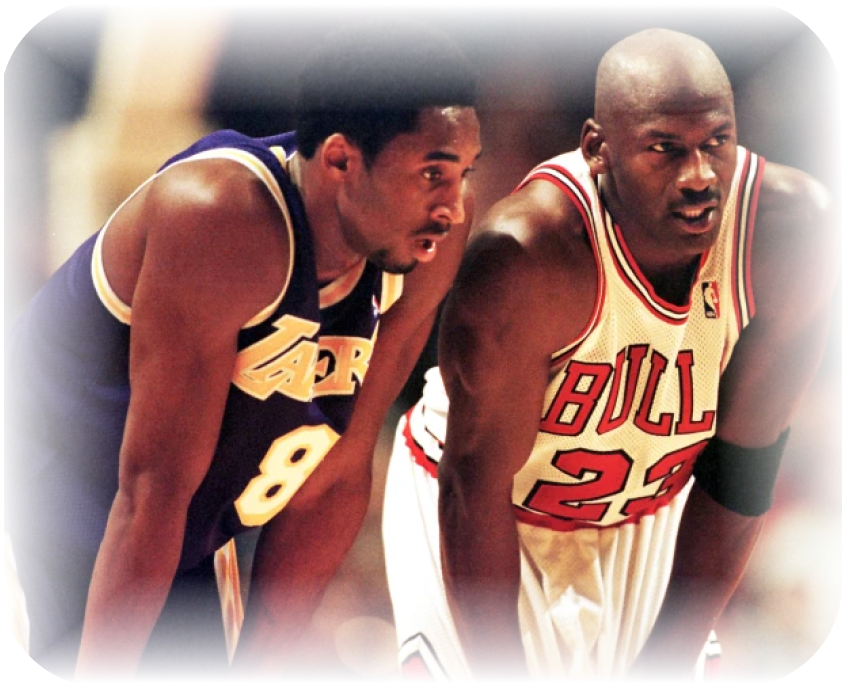

Kobe Bryant and Michael Jordan shared a profound and unique relationship that transcended the boundaries of rivalry and evolved into a deep mutual respect and mentorship. Both legends in the world of basketball, their connection was rooted in their similar playing styles, relentless work ethics, and insatiable desire to win. Kobe often referred to Jordan as his big brother, looking up to him for guidance and inspiration throughout his career. Michael, in turn, saw Kobe as his fiercest competitor and a worthy successor to his legacy. Their bond was highlighted by their countless on-court battles and private conversations about the nuances of basketball and life. This mentor-mentee dynamic enriched their lives and left an indelible mark on the sport, influencing generations of players and fans alike.
